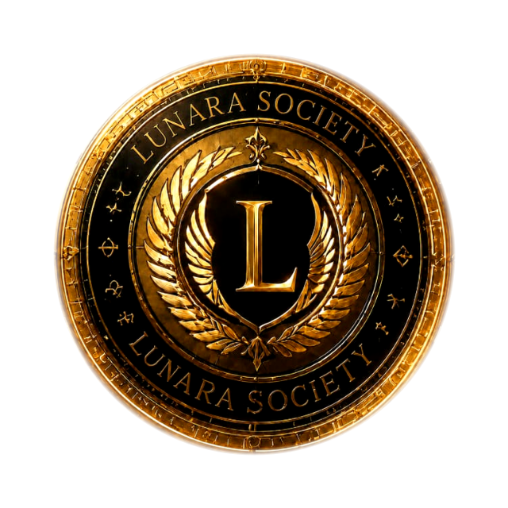

The next binding date
— days
Reading the register…

Constitutional governance · Est. MMXXVI
Machine-readable regulatory intelligence, signed so anyone can check it, and a public register any AI system may query without an account. Every panel beside this one is live.
The next binding date
— days
Reading the register…
Integrity
Verifying…
Checking the published signature on this corpus.
Check any business
Free, unauthenticated, and the same answer an AI system gets.
Four things, plainly
Reading anything here is free and unauthenticated — a claim nobody can check is worth nothing, so checking must never cost anything.
Every obligation we track, with the instrument, the article that sets the date and a link to primary law. No tense is stored — it is computed at the moment you read it.
Read the register → FreeWhich businesses have been verified, and which have not. It answers not_registered for almost everyone, and says plainly that this is not a mark against them.
Query the register → Human reviewIdentity and domain verification reviewed by a named person who signs the decision. We do not certify ourselves, and the record says so.
Apply → MCP · SignedThe same record over the Model Context Protocol, with an Ed25519 signature on every document so a model can check its source rather than trust the transport.
Connect →The record of being wrong
Five corrections are published against this institution, in full, with what we got wrong and why. One of them is an obligation we missed for three days — a prohibition that arrives on 2 December 2026 and carries the heaviest penalty in the Act.
A compliance authority that has never issued a correction is either very lucky or not looking.